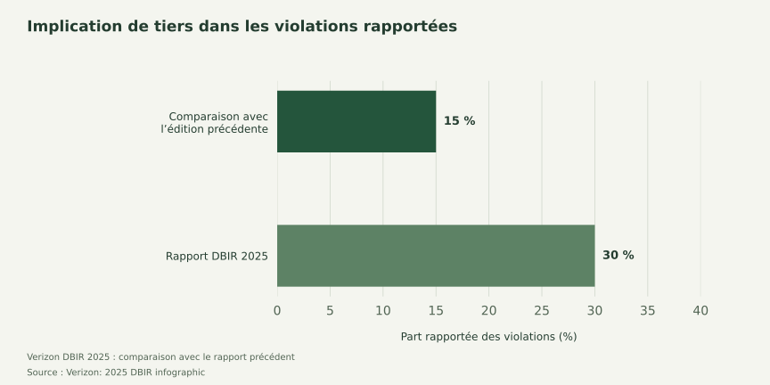

Votre site dépend de code que votre équipe n’a pas écrit. Une boutique WordPress utilise des extensions et un thème. Une application sur mesure s’appuie sur des bibliothèques, des outils de compilation et des services hébergés. Même un petit site vitrine peut charger des statistiques, des polices, un formulaire et un calendrier. Chaque dépendance apporte une fonction utile et une relation à comprendre.
La sécurité de la chaîne logicielle commence par cette réalité. Il faut savoir ce que le site utilise, qui le maintient, comment les changements arrivent en production et comment réagir lorsqu’un composant devient vulnérable ou indisponible. Une petite entreprise peut progresser sans créer un centre opérationnel de cybersécurité.
Ce guide explique la gestion des dépendances web, la maintenance WordPress, les décisions de mise à jour, les accès et la reprise. Il associe des recommandations publiées à une démarche pratique que nous proposons pour les sites et applications métier. Les exemples illustrent des choix d’exploitation ; ils ne constituent pas l’audit d’un client nommé.
Une dépendance est un élément nécessaire au fonctionnement attendu du service. Certaines sont visibles, comme un prestataire de paiement ou un module de réservation. D’autres restent derrière l’interface : une bibliothèque qui lit les fichiers déposés, une extension qui génère les factures ou une automatisation qui publie le site.
Distinguez les dépendances de code des dépendances de service. Une bibliothèque peut accompagner l’application et s’exécuter sur votre serveur. Une API externe reste hors de votre déploiement, avec sa propre disponibilité, ses identifiants, ses tarifs et son calendrier d’évolution. Les deux comptent, mais leur supervision et leur traitement diffèrent.
Distinguez également les dépendances directes et indirectes. Une bibliothèque choisie par le développeur peut utiliser plusieurs autres composants. Un inventaire limité aux choix manuels manque alors une partie du logiciel réellement exécuté. Les outils adaptés à l’écosystème peuvent révéler l’arbre complet des versions résolues.
Reliez les dépendances importantes aux tâches métier. Si la génération de factures échoue, quelles commandes demandent une intervention ? Si la carte disparaît, le client retrouve-t-il encore l’adresse ? Le lien entre composant technique et conséquence opérationnelle aide l’entreprise à hiérarchiser la maintenance sur une base concrète.
Dans l’annonce de son rapport DBIR 2025, Verizon indique que l’implication de tiers dans les violations a doublé pour atteindre 30 %. Son infographie du rapport compare ce résultat à 15 % dans l’édition précédente. Les tiers couvrent différents fournisseurs et relations : ces chiffres ne signifient pas que des extensions web causent 30 % des violations.

Verizon DBIR 2025 : comparaison avec le rapport précédent. Verizon compare environ 15 % dans l’édition précédente à 30 % en 2025. Les tiers couvrent différentes relations fournisseurs, au-delà des extensions web. Les ensembles d’incidents diffèrent ; ces données ne mesurent pas le risque individuel d’un site. Consulter la source et sa méthodologie.
| Groupe ou objectif | Valeur |
|---|---|
| Comparaison avec l’édition précédente | 15 % |
| Rapport DBIR 2025 | 30 % |
Le graphique compare des parts rapportées dans deux éditions. Il ne mesure pas la probabilité d’un incident sur votre site, et les ensembles d’incidents diffèrent. Cette observation justifie un examen des dépendances ; votre inventaire et votre contexte déterminent ensuite les priorités concrètes.
Une petite entreprise peut partir d’une question plus simple : si un composant exigeait aujourd’hui une correction urgente, quelqu’un saurait-il qu’il existe et disposerait-il des accès pour agir ? Cette vérification révèle souvent une faiblesse utile à corriger avant même l’interprétation d’un score de risque complexe.
Notez le nom, l’usage, la version installée lorsqu’elle existe, la provenance, le responsable et le circuit de mise à jour. Pour un service externe, ajoutez le compte et le processus soutenu. Placez cet inventaire assez près du développement ou de la maintenance pour qu’une personne le tienne réellement à jour.
Avec WordPress, recensez les extensions actives et inactives, le thème, le thème enfant, la version du cœur et les fonctions utiles de l’hébergeur. Avec une application sur mesure, conservez les manifestes et fichiers de verrouillage, puis examinez les dépendances résolues. Ajoutez les outils de livraison et scripts extérieurs au gestionnaire de paquets principal.
Repérez les provenances incertaines. Une extension téléchargée sur un site inconnu ne demande pas la même réponse qu’un paquet officiel dont le responsable et le mécanisme de mise à jour sont vérifiables. De même, un script collé dans une page doit posséder un objectif et un propriétaire documentés.
Rendez les composants critiques faciles à retrouver. La première version de l’inventaire ne nécessite pas un tableau de bord élaboré. Une liste exacte vaut mieux qu’un fichier abandonné contenant des dizaines de champs incompris. Ajoutez des détails lorsqu’ils soutiennent une décision : renouvellement, examen d’accès ou réaction à un incident.
Une nomenclature logicielle, souvent appelée SBOM, décrit les composants d’un produit. Elle peut rapprocher une vulnérabilité nouvellement annoncée des versions livrées. Son utilité dépend de son exactitude, de sa couverture et de la manière dont l’organisation l’exploite après sa création.
Un SBOM ne prouve pas que chaque composant est sûr et ne remplace pas une carte des services métier. Une liste exploitable par machine peut identifier une bibliothèque vulnérable sans préciser quel parcours utilise la fonction touchée. L’inventaire technique et le contexte d’exploitation se complètent.
Pour une petite application, commencez par un suivi soutenable par l’équipe. Si un achat ou une livraison exige un SBOM, choisissez un format pris en charge et générez-le avec la version. Associez le document à cette livraison plutôt que de traiter un ancien export comme une description permanente.
Le cadre SSDF de développement sécurisé du NIST fournit un vocabulaire plus large pour organiser les responsabilités et les échanges avec les fournisseurs. Demandez ensuite quels contrôles le projet applique et quelles preuves il conserve. Le nom d’un référentiel sur une proposition ne démontre pas une pratique d’exploitation.
Une notification lance une investigation. Vérifiez si la version installée est concernée, si le comportement vulnérable reste accessible, si une exploitation est connue et quels contrôles réduisent l’exposition. Un problème grave accessible depuis Internet peut exiger une action avant une évolution fonctionnelle ordinaire.
Les recommandations OWASP sur les dépendances vulnérables expliquent l’intérêt de surveiller les composants et de maintenir un processus de correction. En pratique, désignez un responsable pour examiner les alertes et documenter la décision, particulièrement lorsque la correction immédiate n’est pas possible.
Séparez l’urgence de la maintenance courante. Une intervention urgente peut nécessiter de désactiver une fonction, de restreindre son exposition ou d’appliquer une correction ciblée avant un cycle complet. Les changements ordinaires suivent un environnement de préparation et des vérifications de non-régression. Dans les deux cas, il faut confirmer le résultat.
Une alerte ignorée ne constitue pas un risque accepté. Si le composant ne peut pas évoluer, notez pourquoi, la protection temporaire et la prochaine révision. Le mainteneur suivant trouvera une explication, plutôt qu’une accumulation d’avertissements que personne ne sait distinguer.
Les consignes de durcissement de WordPress insistent sur la maintenance et la limitation de l’exposition. Pour un site d’entreprise, traduisez-les en un circuit qui respecte les fonctions utilisées par les clients : formulaires, recherche, commande, comptes et intégrations opérationnelles.
Utilisez une copie de préparation lorsque cela est pertinent et traitez correctement les données clients copiées. Appliquez le changement, parcourez les tâches critiques et inspectez les erreurs avant la production. Une extension peut préserver l’accueil tout en affectant un champ de paiement ou un export planifié. Choisissez les contrôles selon les usages réels.
Retirez les composants devenus inutiles après vérification de leurs dépendances. Une extension inactive peut toujours se trouver sur le serveur. Documentez la raison des éléments conservés, notamment lorsque plusieurs extensions semblent proposer des fonctions qui se recouvrent.
Prévoyez une reprise adaptée. Revenir sur les fichiers et restaurer la base n’a pas les mêmes effets. Remettre la base de la veille peut supprimer les commandes du jour. Avant un changement important, déterminez comment préserver ou rapprocher les nouveaux dossiers si une restauration devient nécessaire. Cela demande plus de précision qu’une consigne générale invitant à cliquer sur restaurer.
La chaîne logicielle inclut la compilation et le déploiement. Un collaborateur du dépôt, un jeton de livraison ou une automatisation peut publier du code. Examinez ces permissions avec les accès administratifs à l’application réelle : les deux chemins peuvent modifier le service rendu aux clients.
Utilisez des comptes nominatifs et une authentification multifacteur appropriée. Limitez les identifiants de déploiement aux ressources nécessaires. Gardez les secrets hors du code public et prévoyez leur renouvellement lorsque les accès changent. Un jeton présent dans l’historique peut rester exposé après sa suppression du dernier fichier.
Organisez une revue avant la production lorsque plusieurs personnes contribuent ou que les conséquences justifient un second regard. Conservez le lien entre version source et livraison. L’équipe qui examine une erreur doit pouvoir retrouver le changement sans reconstruire les événements à partir des souvenirs de chacun.
Examinez les actions et scripts de compilation externes avant leur adoption. Ils peuvent s’exécuter avec les accès de l’environnement et ses identifiants. Donnez-leur une provenance et une politique d’évolution explicites. L’automatisation reste utile : un processus maîtrisé améliore la cohérence et facilite l’investigation des changements.
GitHub décrit les alertes Dependabot comme un moyen de repérer les dépendances connues pour être vulnérables dans les dépôts pris en charge. Ces outils accélèrent la détection. Leur couverture dépend de l’écosystème, de la configuration et des informations disponibles sur les vulnérabilités.
Désignez une personne ou une fonction de maintenance pour qualifier la file. Pour chaque alerte pertinente, notez le composant, l’exposition, la correction envisagée, les tests et l’échéance. Le nombre d’alertes closes ne suffit pas comme mesure : fermer une notification sans résoudre ni comprendre le problème améliore davantage le tableau de bord que le service.
Reliez les alertes à la livraison. Une évolution de version demande des vérifications proportionnées à son effet. Une version majeure peut changer une API ou un comportement, tandis qu’une correction de sécurité mérite aussi une non-régression adaptée. L’équipe doit disposer d’un chemin concret entre notification et correction déployée.
Recensez également les éléments hors couverture : modules hébergés, extensions installées manuellement, paquets privés et services gérés par des fournisseurs peuvent demander d’autres avis ou contrôles. L’inventaire rend ces angles morts visibles. Aucun outil ne donne confiance dans un composant dont l’organisation ignore l’existence.
Les scripts du navigateur peuvent apporter statistiques, messagerie, publicité, formulaires ou personnalisation. Ils peuvent aussi ajouter des requêtes, modifier les performances et interagir avec la page. Examinez l’usage de chaque script, ses pages de chargement et l’utilité actuelle de sa fonction.
Identifiez les personnes capables d’ajouter ou de modifier ces scripts par un gestionnaire de balises ou un CMS. Le dépôt peut bénéficier d’une revue attentive alors qu’un autre compte publie directement du code dans la page. Les deux circuits appartiennent à la gestion des accès et des changements.
Testez le parcours lorsque le service tiers non essentiel échoue. Le visiteur peut-il encore lire, naviguer et contacter l’entreprise ? Concevez les améliorations facultatives pour qu’elles ne bloquent pas inutilement la tâche principale. Vous renforcerez la continuité et faciliterez le retrait d’un outil devenu inutile.
Évitez de copier tous les scripts d’un concurrent pour obtenir une infrastructure marketing apparemment plus avancée. Partez d’un besoin de mesure ou d’interaction précis. Un ensemble réduit et compris se maintient, s’explique et se teste plus facilement. Cette revue contribue aussi aux performances du site, car les scripts inutiles consomment des ressources de chargement et d’interaction.
L’accord de maintenance doit préciser les contrôles, leur fréquence, la transmission des urgences et les limites du périmètre. Les expressions « site entièrement maintenu » ou « site sécurisé » laissent trop de place aux interprétations si l’offre ne décrit pas le travail réel.
Définissez les mises à jour, la surveillance des sauvegardes, les exercices de restauration, les contrôles de disponibilité et la communication en cas d’incident. Distinguez le délai de réponse du délai de résolution. Une prise en charge rapide peut précéder une enquête fournisseur ou une réparation de données plus longue. La clarté soutient la relation lorsque quelque chose échoue.
Identifiez la personne autorisée à approuver une intervention urgente. S’il faut désactiver une fonction vulnérable, le mainteneur doit expliquer l’effet sur les clients et obtenir une décision. Une autorité mal définie peut retarder l’action au moment où le temps devient important.
Conservez un historique accessible à l’entreprise : changements importants, risques non résolus, exercices et évolutions opérationnelles. Il facilite la continuité après un changement de fournisseur et montre ce que couvre le forfait. Une maintenance qui produit des preuves se juge plus facilement qu’une simple promesse rassurante.
Rédigez un plan court avec les contacts, chemins d’accès et premières investigations. Il doit aider à conserver les preuves, limiter les conséquences et rétablir le travail essentiel. La réponse dépend de l’incident : une compromission supposée demande un jugement différent d’une mise à jour ordinairement ratée.
Sachez où trouver les journaux pertinents et qui peut les récupérer. Préservez les horodatages et identifiants de livraison. Évitez de collecter plus de données personnelles que nécessaire et contrôlez l’accès aux éléments recueillis. Un journal utile aide à établir les faits sans devenir une nouvelle réserve incontrôlée d’informations clients.
Désignez un responsable de communication. Clients et collègues ont besoin d’informations exactes sur les fonctions touchées et les alternatives. N’annoncez pas une cause précise avant de disposer de preuves. Distinguez les faits connus, les points examinés et le prochain moment d’information.
Après la reprise, examinez le processus : composant absent de l’inventaire, alerte envoyée vers une boîte abandonnée, procédure dépendante d’une personne absente. Les recommandations de chaîne d’approvisionnement du NCSC structurent utilement la connaissance des fournisseurs, le contrôle, la vérification des accords et leur amélioration continue.
La première semaine peut établir la propriété des comptes et inventorier l’application, les extensions, les services externes et les déploiements. Identifiez les fonctions que l’entreprise ne peut pas perdre facilement. Gardez une liste assez courte pour que le dirigeant reconnaisse chaque parcours critique.
La deuxième semaine peut examiner les versions et alertes. Priorisez les problèmes exposés aux conséquences importantes et notez les décisions. Confirmez que les sauvegardes couvrent base, fichiers et configuration. Une tâche qui omet les documents déposés ne permet pas forcément la récupération attendue par l’entreprise.
La troisième semaine peut tester une restauration représentative et une mise à jour dans un environnement adapté. Parcourez ensuite les tâches clients. Notez ce qui fonctionne, ce qui exige un savoir absent de la documentation et ce qui demande une correction. Utilisez l’exercice pour améliorer les instructions, sans cacher les étapes difficiles.
La quatrième semaine peut fixer la cadence et les contacts d’intervention. Cette séquence constitue une proposition, sans délai universel ni certification de sécurité. Un problème exposé urgent ne doit pas attendre sa semaine théorique. L’intérêt est de passer d’une responsabilité incertaine à une exploitation répétable et étayée.
Un questionnaire doit viser la relation concrète. Un service de polices publiques et un prestataire traitant des documents clients ne créent pas la même exposition. Identifiez les données, accès et dépendances opérationnelles avant de choisir les garanties à demander. Une revue légère peut ainsi rester utile sans traiter tous les fournisseurs de manière identique.
Demandez comment le fournisseur signale les correctifs, incidents importants et fins de support. Vérifiez où consulter la documentation et qui reçoit les avis. Une communication utile nécessite une destination surveillée : un message adressé à un ancien salarié protège peu le service actuel.
Pour un composant maintenu par un prestataire, précisez la propriété du dépôt, les dépendances et la manière dont un autre développeur autorisé peut intervenir. Une intégration sur mesure abandonnée peut mériter autant d’attention qu’une extension commerciale. Sa taille réduite ne supprime pas le besoin de correction et de reprise.
Gardez les affirmations de garantie précises. Une certification peut couvrir un service et une période définis, tandis que votre configuration reste de votre responsabilité. Demandez le périmètre pertinent et évitez de transformer une attestation fournisseur en garantie générale sur tout le site.
Documentez la décision et le prochain événement de réexamen. Un nouvel accès aux données, une intégration critique ou une fin de support peut justifier une nouvelle analyse. La revue suit ainsi le risque réel plutôt qu’une liste répétée sans rapport avec l’évolution de l’activité.
Choisissez un composant et parcourez un scénario de panne : formulaire indisponible, génération PDF à corriger immédiatement ou service de livraison inaccessible. Demandez comment l’équipe s’en apercevrait et quelle tâche client échouerait en premier. L’exercice peut révéler une faille sans attendre un incident réel.
Suivez les personnes autant que le logiciel. Qui reçoit l’alerte, accède au compte, décide de désactiver la fonction et indique aux équipes en contact avec les clients ce qu’elles doivent expliquer ? Un plan technique incomplet apparaît souvent dans ces transmissions ordinaires.
Examinez ensuite l’alternative. Une adresse de courriel fournit une voie de contact si quelqu’un la surveille. Une facturation manuelle peut fonctionner temporairement si le rapprochement au retour de l’automatisation est prévu. Le secours doit expliquer comment revenir ensuite à des dossiers cohérents.
Conservez les résultats dans une courte liste d’actions : responsable, comportement attendu et contrôle d’achèvement. Si une correction doit attendre, documentez l’arrangement temporaire et ses conséquences. Cette trace est plus utile qu’un exercice déclaré réussi parce que tous les participants étaient présents.
Recommencez avec une autre dépendance après une évolution importante ou l’ajout d’un processus critique. Ces répétitions développent la compréhension du service. Elles relient aussi la sécurité à la continuité concrète qui importe aux clients : trouver une information, transmettre une demande et recevoir une réponse fiable.
Le nombre seul ne suffit pas. La maintenance, les accès, l’exposition, la configuration et le comportement comptent. Retirer un composant inutile simplifie le service, mais remplacer une extension maintenue par un code mal suivi peut créer d’autres problèmes.
Elles peuvent aider sur les composants concernés. Quelqu’un doit toujours vérifier les fonctions critiques, traiter les échecs et examiner les éléments hors couverture. Adaptez la politique au site et à sa récupération, avec un responsable nommé pour le résultat.
Une analyse apporte des éléments dans son périmètre et à une date précise. Elle ne prouve pas l’absence de toute vulnérabilité ou erreur de configuration. Associez les outils appropriés à la revue des accès, aux mises à jour, aux contrôles fonctionnels et à la reprise.
Un site fiable repose sur des personnes et des processus derrière l’interface. L’équipe connaît ses composants, remarque les changements pertinents, corrige de manière organisée et sait reprendre le travail essentiel. Ces habitudes soutiennent la confiance des clients et rendent les prochaines évolutions plus faciles à gérer.
Deux Rives Web conçoit et améliore sites, applications et intégrations avec leur maintenance en perspective. Découvrez nos services de développement web, notre analyse de la fiabilité des API de paiement, ou présentez-nous le système à maintenir. Nous pourrons cartographier ses dépendances, identifier les écarts prioritaires et préparer une exploitation adaptée aux personnes responsables de l’activité.